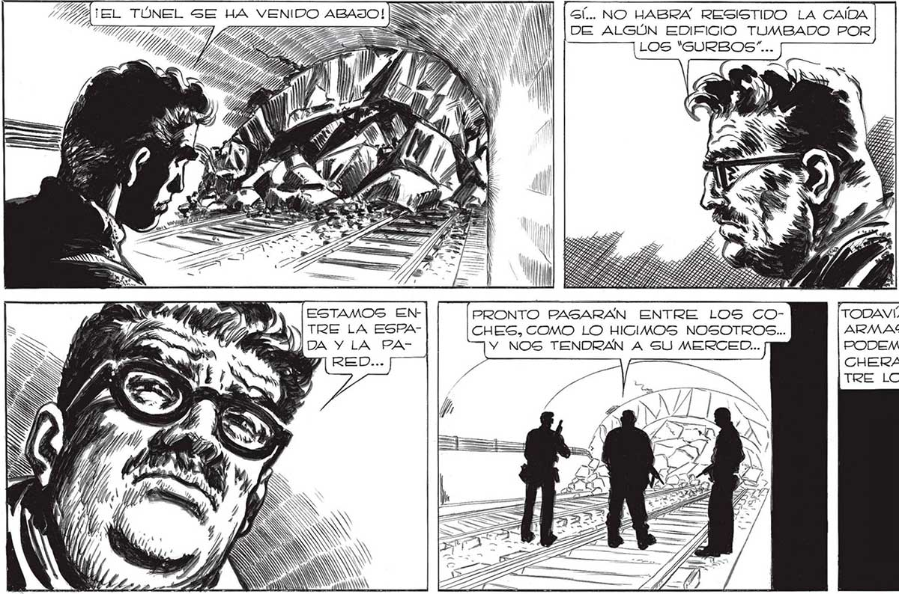

LA COMPARACION ES IDIOTA, PERO AHORA SÍ QUE NO TENEMOS SS W SÍ... NO HABRA RESISTIDO LA CAÍDA 7 HARRIS OS: OÍ DE ALGÚN EDIFICIO TUMBADO P 77 pp TG E => SS NA l LO bo ” só EP 2 AO IA NNWWW = => PEPA, TAR >> Ñ Pr lA ] Ñ ZN ESTAMOS EN- PRONTO PASARAN ENTRE LOS CO- TODAVÍA TENEMOS TRE LA ESPA- CHES, COMO LO HICIMOS NOSOTROS... ARMAS, SENOR... DA Y LA PA- Y NOS TENDRAN A SU MERCED... PODEMOS ATRINCHERARNOS ENTRE LOS COCHES... FRANCO DICE BIEN, FAVA... DESDE [LOS COCHES PODEMOS MOLESTARMÁ LOS BASTANTE ... Fra saBíA Berro, incon- QUE NUNGA PARABLE > ve PODRÍAMOS FRANCO. NADA > ATAJARLOS.QUE LO DOBLE- ed y” 7 EL FIN ERA GABA : Gil ; MER EMI AEB CIERTO. PERO ERA NECE- ná NN j Y 2X ER VY A e E SABIA QUE EL SARIO WI) ll - PARO de MUI OÑ EY ; E A GOLPE DEFINIPELEARIA 104 Y) O Sas 11 kh INEA Y AI PEE TIVO SERÍA MAS AUNQUE MID AS, A A MEN EX TÍ HE, LLEVADERO Gl GOLO FUERA e 8 dh a ' > ¿Mo VÍGÓ LO RECIBAMOS POR RE- Mo E já EN EL CALOR TRASAR A DEL COMBATE. MEDIA HOm1 ¡FA / ) f / 4 ed no A A) , p = 4, POR ESO ACEP RA EL FIN. E PES MT NES O al O: TO PELEAR. A 2
